A complete image-led route through the opening area. Read each red-numbered board, then use the English note directly below it before moving on.
This route records interactions, route-only rewards and boss encounter points. Combat strategies are deliberately kept out of the walkthrough.
Start
Campfire clearing
Key unlock
Harros Shell
Destination
Marrow Keep
Opening path
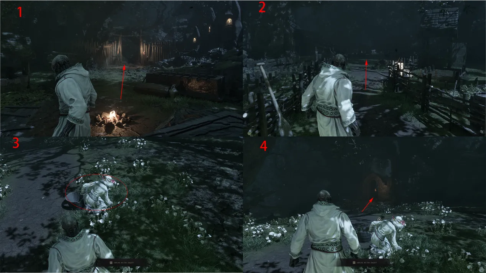
Route 01From the campfire, follow the red arrows through the clearing. The four panels lead cleanly to Daisy; there is no important pickup on this opening stretch.
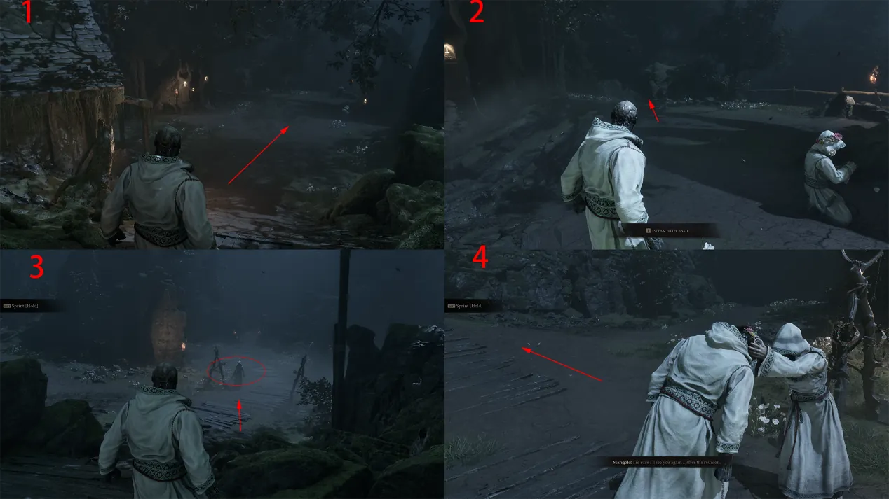
Route 02Once control returns, stand up and stay on the only main path. Treat this as a movement tutorial: do not leave the road looking for side content yet.
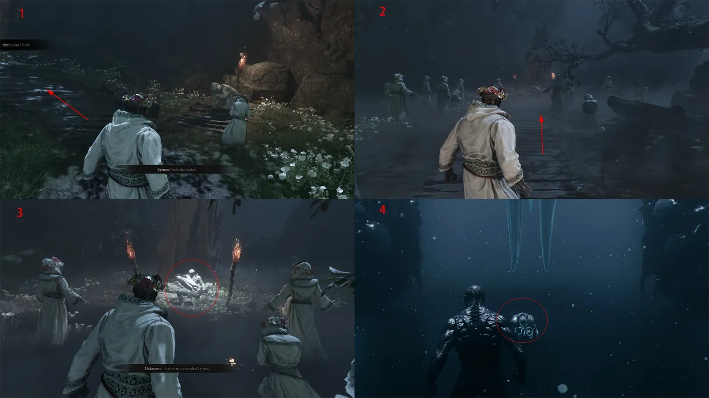
Route 03Continue along the road and speak with Daisy at the marked spot. Finish the conversation before taking the cave-side exit shown in red.
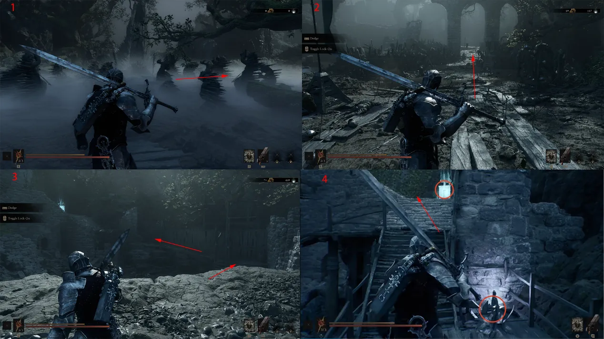
Route 04At the Mother Statue, interact with the glowing point to acquire the Harros Shell. The story cutscene starts immediately after the pickup.
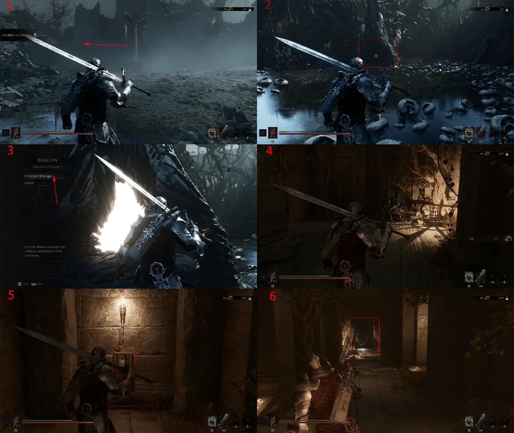
Route 05After speaking with Rook, clear the nearby enemies and climb the stairs. Check the Mother Statue for Common Brew, collect the nearby ranged weapon, then search the right corner of the camp for a Heartstone.
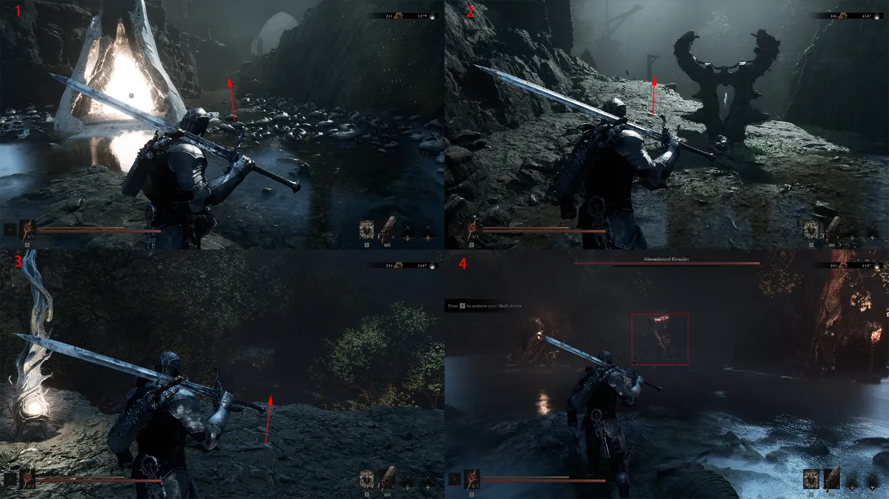
Route 06Break the wooden crates, drop down and unlock the Village Outskirts Rebirth Beacon. Purify it, open the stone coffin inside for the Muradyn Actuator, then use the elevator and wall switch to finish the corruption route.
Beacon and boss gates
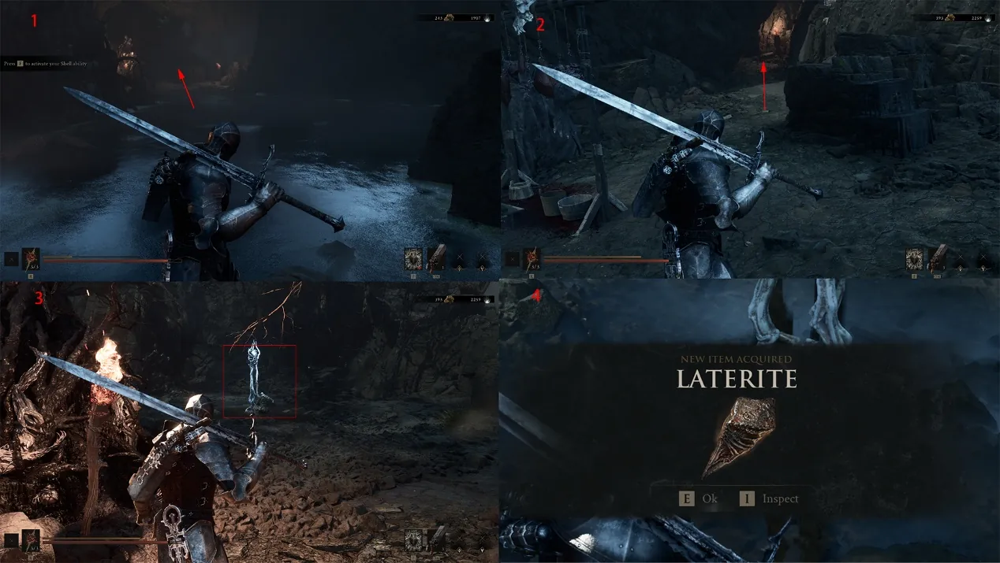
Route 07Claim the new Shell ability ahead, follow the mountain trail uphill and drop from the marked cliff. This is the encounter point for the Bound Ritualist.
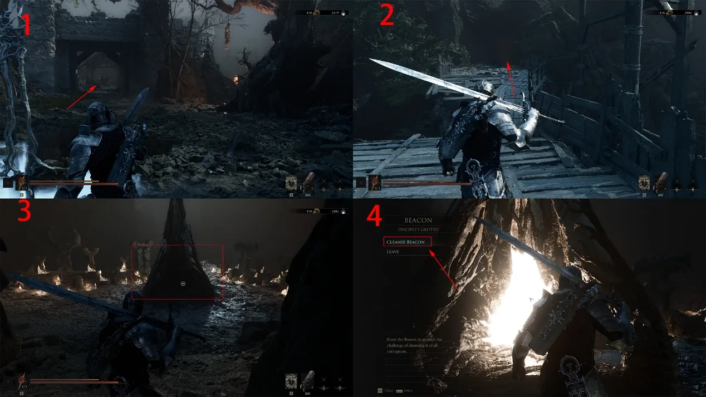
Route 08After the boss, enter the left cave and clear the camp. In the left passage, strike the glowing object to collect a Redstone.
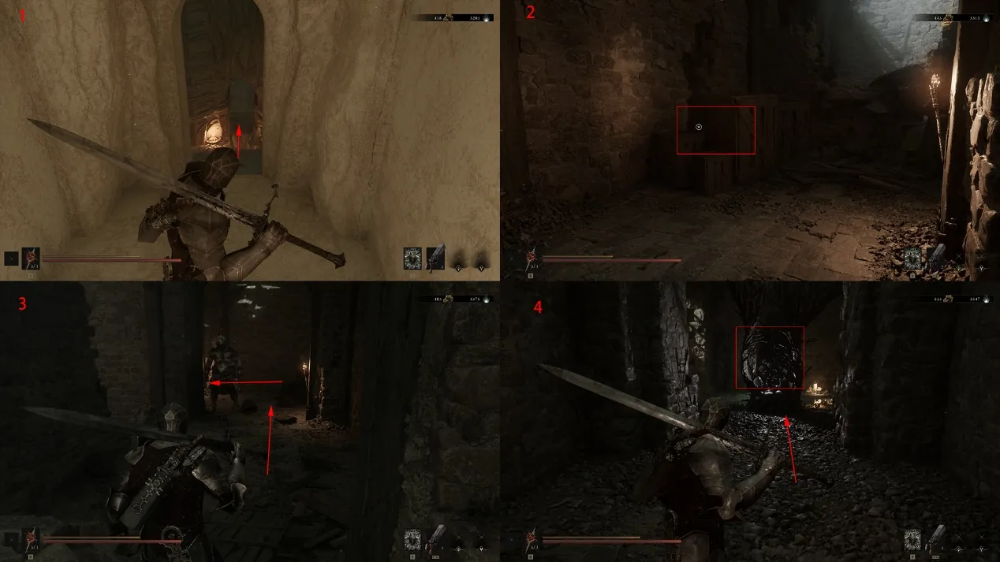
Route 09Clear the bridge, enter the cave ahead and drop down. Continue through the enemies to unlock the Faithful Grotto Rebirth Beacon, then select Purify.
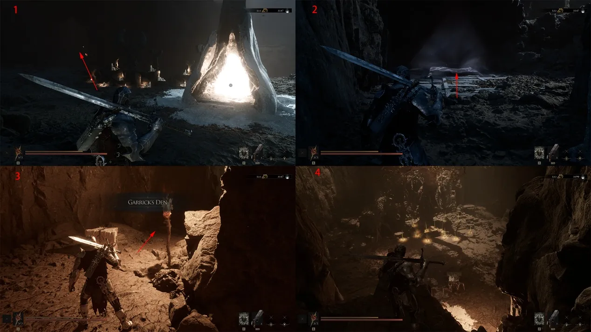
Route 10Ride the Beacon elevator down, smash the crate on the left and slip through the gap. Clear the room, purify the corruption and return to the surface.
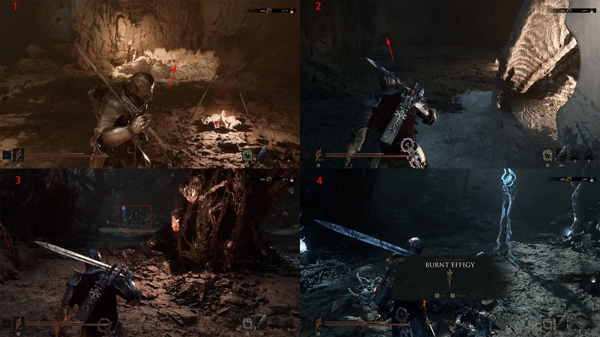
Route 11Take the path left of the Beacon into Garrick's Den. Clear the lower enemies, read the note on the left, loot the camp and return to the Beacon.
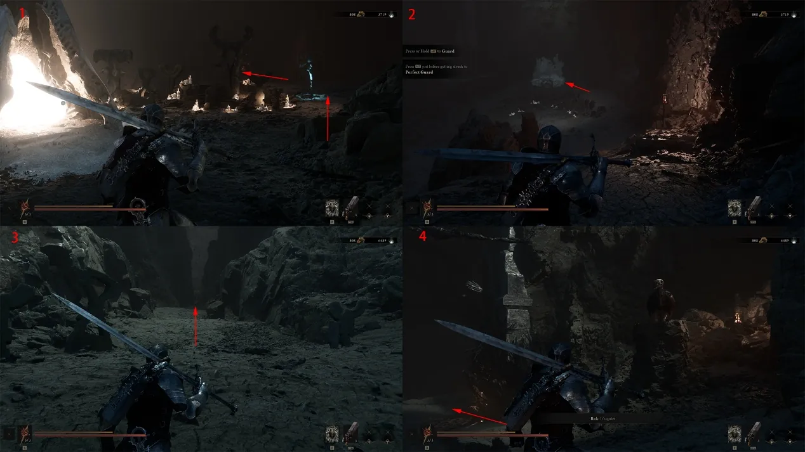
Route 12Use the cave in front of the Beacon to reach the Foul Remnant. The encounter reward is the Charred Effigy.
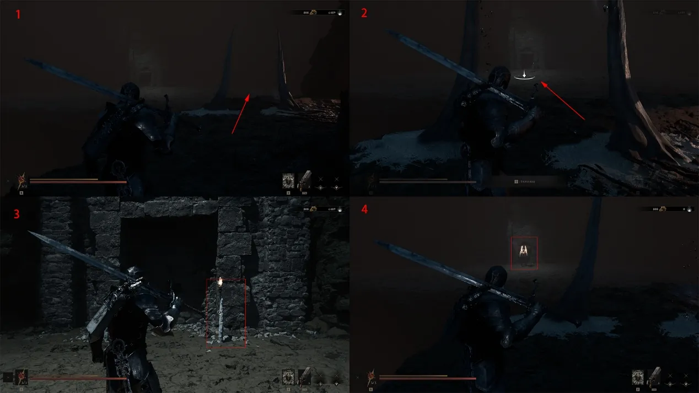
Route 13Return to the Beacon and take the right-hand mountain descent. A hidden enemy appears at the marked point; collect the Heartstone behind it, climb up and speak with Rook.
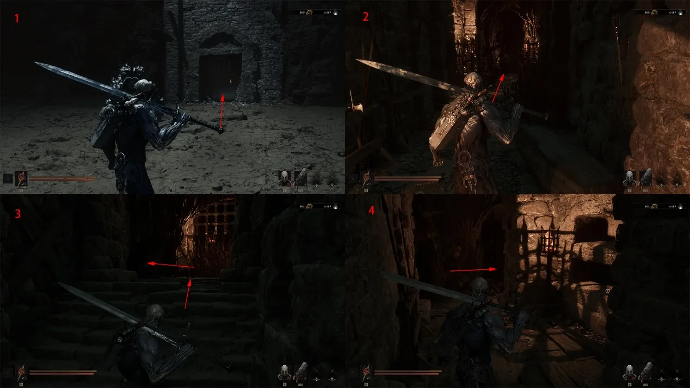
Route 14Interact with the torch to trigger the Dew Golem encounter. Its route reward is Vatra's Mark.
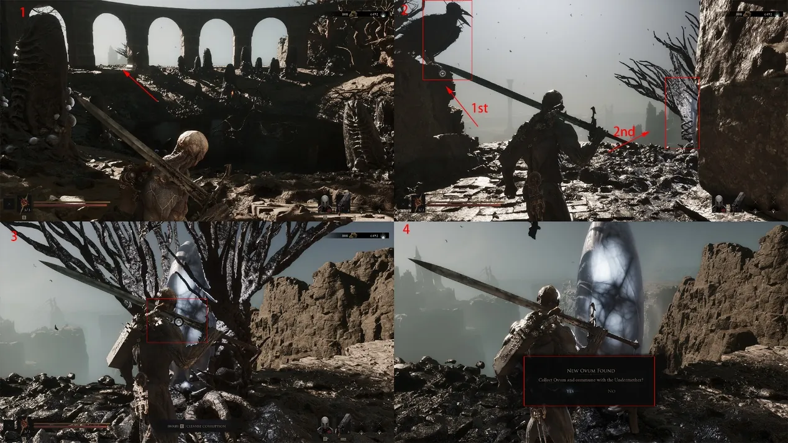
Route 15In the next corridor, read the note in the left room and the second note on the right wall. After the final talk with Rook, purify the corruption and take the Sacred Egg to finish the Prologue.